Copyright (C) 2009 The Android Open Source Project
Licensed under the Apache License, Version 2.0 (the "License");
you may not use this file except in compliance with the License.
You may obtain a copy of the License at
http://www.apache.org/licenses/LICENSE-2.0
Unless required by applicable law or agreed to in writing, software
distributed under the License is distributed on an "AS IS" BASIS,
WITHOUT WARRANTIES OR CONDITIONS OF ANY KIND, either express or implied.
See the License for the specific language governing permissions and
limitations under the License.
Vrs 1.0
Content Authoring Application for the
JET Interactive Music Engine
Authored by SONiVOX
Copyright 2009 Sonic Network, Inc.
This document contains the user guidelines
for the SONiVOX JET Creator, an authoring application for creating and
auditioning JET files. JET is an interactive music player for small embedded
devices, including the Google Android platform. It allows applications to
include interactive music soundtracks, in
JET works in conjunction with SONiVOX’s
Embedded Audio Synthesizer (EAS) which is the
In addition to the graphical user
interface, there are two main functionalities taking place in JET Creator. The
first involves gathering all the source data (
The JET Creator application is written in the Python programming language, therefore you need to have the current version of Python and WXWidgets installed. There is both a Mac and Windows version.
It is important to use a common set of
terms to minimize confusion. Since JET uses
Channel: MIDI data associated with a specific
Controller: A
DAW: Digital Audio Workstation. A common term for
EAS: Embedded
JET: Jet Interactive Engine. The name of the SONiVOX JET interactive music engine.
M/B/T: Measures, Beats and Ticks
Segment: A musical section such as a chorus or verse that is a component of
the overall composition. In JET, a segment can be an entire MIDI file or a
derived from a portion of a
SMF-0: Standard MIDI File Type 0, a MIDI file that contains a single
track, but may be made up of multiple channels of
SMF-1: Standard MIDI File Type 1, a MIDI file that contains a one more
tracks, and each track may in turn be made up of one or more channels of
Track: A single track in a DAW containing a timed sequence of
Interactive music can be defined as music that changes in real-time according to non-predictable events such as user interaction or game play events. In this way, interactive music is much more engaging as it has the ability to match the energy and mood of a game much closer than a pre-composed composition that never changes. In some applications and games, interactive music is central to the game play. Guitar Hero is one such popular game. When the end user successfully ‘captures’ the musical notes coming down the fret board, the music adapts itself and simultaneously keeps score of successes and failures. JET allows for these types of music driven games as well.
There are several methods for making and controlling interactive music and JET is one such method. This section describes the features of JET and how they might be used in a game or software application. It also describes how JET can be used to save memory in small footprint devices such as Android enabled mobile handsets.
JET supports a flexible music format that can be used to create extended musical sequences with a minimal amount of data. A musical composition is broken up into segments that can be sequenced to create a longer piece. The sequencing can be fixed at the time the music file is authored, or it can be created dynamically under program control.
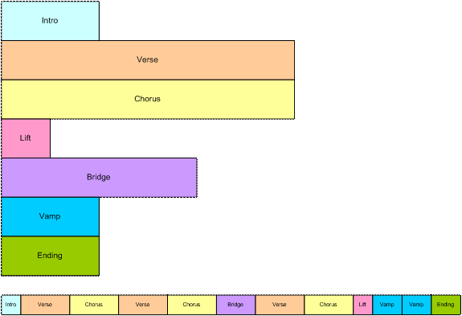
Figure 1: Linear Music Piece
This diagram shows how musical segments are
stored. Each segment is authored as a separate
The bottom part of the diagram shows how the musical segments can be recombined to create a linear music piece. In this example, the bridge might end with a half-step key modulation and the remaining segments could be transposed up a half-step to match.
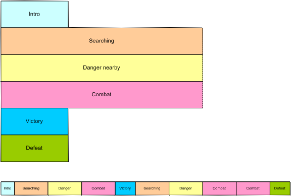
Figure 2: Non-linear music piece
In this diagram, we see a non-linear music piece. The scenario is a first-person-shooter (FPS) and JET is providing the background music. The intro plays as the level is loading and then transitions under program control to the Searching segment. This segment is repeated indefinitely, perhaps with small variations (using the mute/un-mute feature) until activity in the game dictates a change.
As the player nears a monster lair, the program starts a synchronized transition to the Danger segment, increasing the tension level in the audio. As the player draws closer to the lair, additional tracks are un-muted to increase the tension.
As the player enters into combat with the monster, the program starts a synchronized transition to the Combat segment. The segment repeats indefinitely as the combat continues. A Bonus Hit temporarily un-mutes a decorative track that notifies the player of a successful attack, and similarly, another track is temporarily un-muted to signify when the player receives Special Damage.
At the end of combat, the music transitions to a victory or defeat segment based on the outcome of battle.
JET can also synchronize the muting and un-muting of tracks to events in the music. For example, in the FPS game, it would probably be desirable to place the musical events relating to bonuses and damage as close to the actual game event as possible. However, simply un-muting a track at the moment the game event occurs might result in a music clip starting in the middle. Alternatively, a clip could be started from the beginning, but then it wouldn’t be synchronized with the other music tracks.
However, with the JET sync engine, a clip
can be started at the next opportune moment and maintain synchronization. This
can be accomplished by placing a number of short music clips on a decorative
track. A
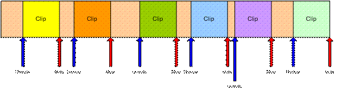
Figure 3: Synchronized Mute/Unmute
JET provides an audio synchronization API
that allows game play to be synchronized to events in the audio. The mechanism
relies on data embedded in the
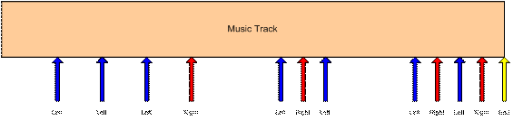
Figure 4: Music Game with Synchronization
The arrows represent events in the music sequence where game events need to be synchronized. In this case, the blue arrow represents a time where the player is supposed to press the left button, and the red arrow is for the right button. The yellow arrow tells the game engine that the sequence is complete. The player is allowed a certain time window before and after the event to press the appropriate key.
If an event is received and the player has not pressed a button, a timer is set to half the length of the window. If the player presses the button before the timer expires, the game registers a success, and if not, the game registers a failure.
If the player presses the button before the event is received, a timer is set to half the length of the window. If an event is received before the timer expires, the game registers a success, and if not, the game registers a failure. Game play might also include bonuses for getting close to the timing of the actual event.
To author JET files and hear them playback
interactively, the content author will work in two applications which are
designed to work together smoothly. The first is application is any
off-the-shelf
Please see the JET Content Authoring Guidelines documentation for additional details on content authoring.
JET Creator is a python language application, therefore, you must have Python and wxPython installed on your machine.
JetCreator was created and tested with:
Python Version 2.5.4
wxPython Version 2.8.7.1
These can be downloaded here:
PC:
http://www.python.org/download/releases/2.5.4/
http://www.wxpython.org/download.php
MAC:
http://wiki.python.org/moin/MacPython/Leopard
http://www.wxpython.org/download.php
After installing Python and wxPython, simply unzip or copy all the files in the JET Creator application directory to a folder on your hard drive.
To launch JET Creator go to a command prompt and set the directory to where you’ve installed Python. Next run python with the command:
python
jetcreator.py
There are a few different file types associated with JET Creator.
.jtc JET Creator project file. This file contains all the information associated with a JET Creator project. When you Save or Save-as out of JET Creator, this file type is saved.
.jet JET File. This output file is automatically generated from JET Creator whenever you save your JET Creator project. This is the file that bundles all JET assets together into a single file that the Android application will use. Give this file to the Android application developer.
.mid
.seg Segment
File. This is a JET Segment file. It has the same name as the
.zip Zip Archive file. When you Export a JET Archive, a zip file is created that contains all the assets (files) necessary for JET Creator. Use this to transfer JET Creator projects to other people.
When you first launch JET Creator you are presented with an open dialog like the following.
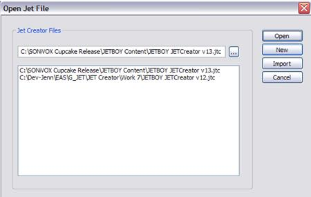
Open will open an existing .jtc (JET Creator file) file. Use the browser button to browse to the directory where you have saved your .jtc file.
New will create a new .jtc file.
Import will import a JET Archive (.zip) file.
Cancel will cancel the dialog and exit the application.
The main window of the JET Creator application looks like the picture below. There are three main sections from top to bottom: segment view, event view, and timeline.
The segment view section displays a list of
the current segments, which
Just below the Segment view is the event view. The event view section displays all events associated with a given segment. Events only display when the segment they are assigned to is highlighted. Each event displays its type, start and end points, track and midi channel assignment, and its event ID.
Just below the Event view is the timeline display. The timeline shows how many measures a given segment is as well as any events associated with that segment. The timeline changes to display the currently selected or playing segment. You can trigger an event in this window while the segment is play by simply clicking on the event in the timeline display.
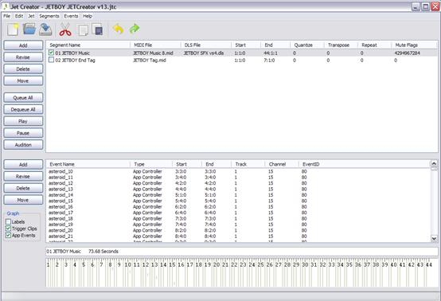
JET
Creator Main Window
The buttons along the left side of main window do the following:
Add: - Displays the segment or event window for adding a new segment or event
Revise: - Displays the segment or event window for updating an existing segment or event
Delete: - Deletes the selected segment or event (will ask for confirmation)
Move: - Displays the move window which allows you to move selected segments or events in time
Queue All: - Queue’s (selects) all segments for playback
Dequeue All: - Dequeue’s (deselects) all segments
Play: - Starts playback of all queue’d segments. This button changes to Stop if any segments are playing
Audition: - Displays the Audition window (see below)
The segment window is where a given segment’s attributes are assigned and auditioned, as shown in the picture below. The left side of the window displays the segments attributes that are stored in the JET file. The right side of the window allows the author to set mute flags, repeat and transpose settings and audition the segment as it will play in the JET game.
Note: the audition attributes (mute flags, repeat and transpose) are not stored in the JET content file (.jet) but rather are defined by the game or application itself. In programming language, these settings correspond directly with the API calls to the JET engine. By including them here, the JET content author can simulate how the segment will respond to the applications API commands during game play.
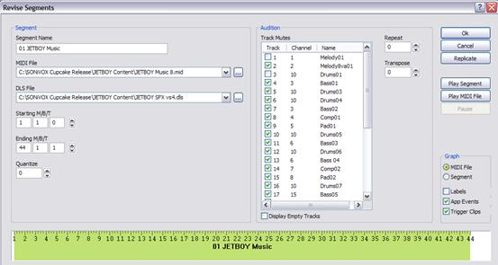
The segment parameters do the following:
Segment Name - Sets the name of the segment
MIDI File -
The name and location of the
DLS File -
The name and location of the DLS2 file, if any, that the
Starting M/B/T - Starting measure, beat and tick of the segment
Ending M/B/T - Ending measure, beat and tick of the segment
Quantize - Quantize value for quantizing the current segment during playback
The audition fields are as follows:
Track Mutes -
Shows the MIDI tracks (not channels)
in the
Channel -
Displays the
Name - Displays the track name meta event (if present) for each track
Repeat - Indicates the number of times a segment should repeat during playback
Transpose - Indicates the transposition in semi-tones or half-steps a segment should transpose during playback
To the right of the Audition window are a few additional buttons. These do as follows:
OK - Selecting OK confirms all segment settings and closes the segment window
Cancel - Selecting Cancel cancels any changes and closes the segment window
Replicate - Displays the Replicate Segment window for entering multiple segments at once. See below.
Play/Stop Segment - Starts or Stops playback of the segment using the segment attributes assigned.
Play/Stop MIDI File -
Starts or Stops playback of the
Pause/Resume - Pauses or Resumes playback.
The event window is where a given segment’s event attributes are assigned and auditioned, as shown in the picture below. To add an event to a segment, the author must first select the segment which will contain the event, then select the Add button. This will bring up the Event window.
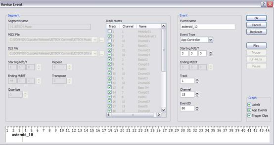
There are two main sections to the event window. The segment section on the left side of the event window is for display only. It shows what the segment attributes are for the given segment. The Event section, on the right side, is where events can be assigned. The following parameters are available:
Event Name - Assigns a name to an event
Event Type - Selects which type of event to assign.
Starting M/B/T - Sets the starting measure, beat, and tick for the event
Ending M/B/T - Sets the ending measure, beat, and tick for the event, if applicable
Track - Sets which track in the given segment the event will apply to
Channel -
Sets which
Event ID - Sets the event ID for the event. Multiple events can be assigned to the same segment and therefore the Event ID is used to identify them
To the right of the Audition window are a few additional buttons. These do as follows:
OK - Selecting OK confirms all event settings and closes the event window
Cancel - Selecting Cancel cancels any changes and closes the event window
Replicate - Displays the Replicate Event window for entering multiple events at once. See below.
Play/Stop - Starts or Stops playback of the segment using the segment attributes assigned. While the segment is playing, events can be triggered and auditioned.
Trigger - Triggers the event assigned. This replicates the API command that the JET game will use to trigger the event, therefore giving the content author a method for auditioning the behaviour of the event.
Mute/UnMute - Mute/UnMute will mute or unmute the track that the event is assigned to
Pause/Resume - Pauses or Resumes playback.
To audition the behaviour of an event, you can select the Play button. This will initiate playback. The trigger button will send the trigger event when pressed. This is equivalent to selecting the green trigger event in the timeline.
Note: Trigger events are meant to unmute a single track of a segment when triggered, then mute that track at the end of the trigger segment. Therefore you should make sure the mute flag is set to mute the track that a trigger event will be unmuting when receiving a trigger event.
Please read Section 7 “Under The Hood” below for details on how trigger events work and behave.
Often in creating JET files, you’ll need to create tens or even hundreds of events. You may also need to move events. The Replicate and Move windows allow for this. There are two Replicate windows for creating multiple segments or events. They look like the following:
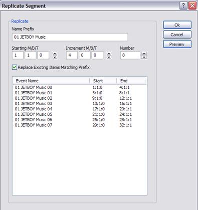
Replicate Segment Window
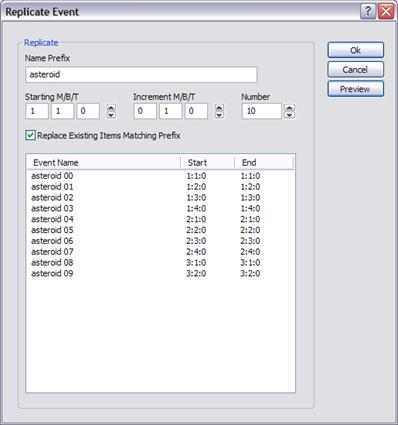
Replicate Event Window
Both Replicate windows function the same. After creating an initial segment or event, you can select the Replicate button. The parameters are as follows:
Name Prefix - Sets the prefix for the name of each segment or event created
Starting M/B/T - Sets the starting time for the first segment or event
Increment M/B/T - Sets the time between segments or events created.
Number -
Sets the number of segments or events you wish to create. If the number
overflows the length of the
Preview - Preview allows you to examine the objects created before saying OK to insert them.
The Move function acts similarly to the Replicate function in that it allows you to edit multiple segments or events at one time, in this case move them in time. Like Replicate, there are two Move windows, one for Segments and one for Events. The windows look like the following:
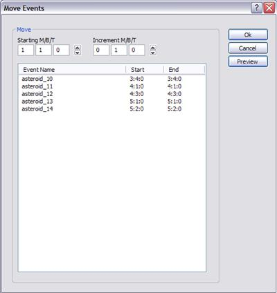
Move Event Window
To use Move, first select the segments or events you wish to move in time, then click the Move button. The parameters are as follows:
Starting M/B/T - Sets the starting time for the first segment or event
Increment M/B/T - Sets the time in M/B/T you wish to move the objects by.
Preview - Preview allows you to examine the objects created before saying OK to move them.
Clicking the Audition button in the main window of the JET Creator application will open the Audition window. This is where the content author or application programmer can simulate the interactive playback as it may occur in the mobile application or game itself.
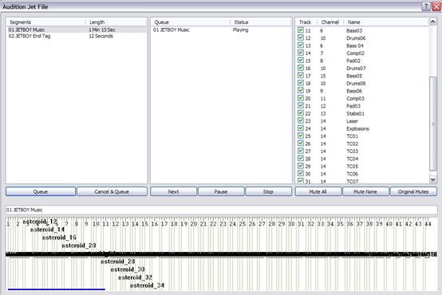
JET Audition Window
There are four main sections to the audition window. The left most section displays the available segments and their length in seconds. The middle section displays a running list of what segments are queued for playback and what their playback status is. The far right section displays the mute flags for the currently playing segment. The timeline section at the bottom is the same as in the main window. It displays the currently playing segment as well as a visual display of any event triggers associated with that segment.
The Audition window allows you to queue up any segment in any order for playback. To do this simply select the segment you wish to cue and hit Queue. That segment will appear in the queue window and start playing (if it is the first segment). Subsequently you can select any other segment or segments and cue them up for playback. As the segments complete playback, the next segment in the queue will begin playing. As is the other windows of JET Creator, you can mute, unmute, trigger event clips, etc. in realtime as each segment is playing back.
Specifically the buttons behave as follows:
Queue - loads the selected segment into the queue and starts playback
Cancel and Queue - cancels the currently playing segment before queueing the selected segment for playback
Cancel Current - cancels the currently playing segment in the queue and begins playback of the next segment
Stop - stops playback of all queued segments
Mute All - mutes all tracks in the current segment
Mute None - unmutes all tracks in the current segment
Original Mutes - sets the original mute flags for the current segment
The combination of these playback options allows an author or application programmer to audition any behaviour an interactive music application may encounter.
The JET Creator menus provide access to many of the parameters in the main window plus a few additional parameters.
The File Menu contains the following elements:
New - Creates a new JET Creator file (.jtc)
Open - Opens an existing JET Creator file
Save - Saves the currently opened JET Creator file
Save As - Saves the currently opened JET Creator file to a new file
Import Project - Imports a JET Creator archive (.zip)
Export Project - Exports a JET Creator archive (.zip)
Exit - Exits the application
The Edit Menu contains the following elements:
Undo - Undo will undo the last edit made
Redo - Redo will redo the last undo
Cut - Copy selected parameter into clipboard and Delete selection
Copy - Copy selected parameter into clipboard and keep selection
Paste - Paste selected parameter
The Edit Menu contains the following elements:
Properties - Brings up the JET Creator priorities window. This window allows you to set the following conditions for a given JET file:
Copyright Info - Contains copyright info to be inserted into JET file
Chase Controllers - Option to chase controllers (on/off). This should usually be ON.
Delete Empty Tracks - Deletes any empty
The Segments Menu contains the following elements:
Add Segment - Brings up the Segment window
Update Segment - Updates segment attributes
Delete Segment - Deletes the current segment from the Segment List
The Help Menu will contain at least the following elements:
JET Creator Help - will launch PDF help document or go to on-line help
About - JET Creator version number, SONiVOX info
Breaking a
Trigger events allow for the following:
Under the hood, JET uses standard MIDI CC
events to accomplish these actions and to synchronize audio. The controllers
used by JET are among those not defined for specific use by the
Controllers 80-83 Reserved for use by application
Controller 102 JET event marker
Controller 103 JET clip marker
Controllers 104-119 Reserved for future use
Controller 103 is reserved for marking
clips in a
For example, to identify a clip with a clip
ID of 1, the author inserts a
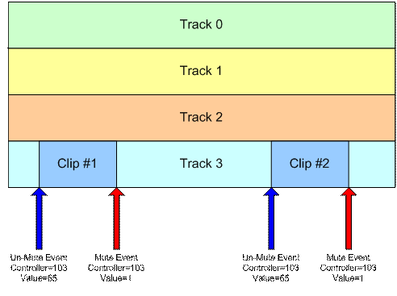
Figure 5: Synchronized Clip
In the figure above, if the JET_TriggerClip() function is called prior to the first controller event, Track 3 will be un-muted when the first controller event occurs, the first clip will play, and the track will be muted when the second controller event occurs. If the JET_TriggerClip() function is called after the first controller event has occurred, Track 3 will be un-muted when the third controller event occurs, the second clip will play, and the track will be muted again when the fourth controller event occurs.
Note: Normally, the track containing the clip is muted by the application when the segment is initially queued by the call to JET_QueueSegment(). If it is not muted, the clip will always play until Jet_TriggerClip() has been called with the clip ID.
Controller 102 is reserved for marking
events in the
Normally, JET starts playback of the next
segment (or repeats the current segment) when the
To avoid this problem, the author can place a JET end-of-segment marker (controller=102, value=0) at the point where the segment is to be looped. When the end-of-segment marker is encountered, the next segment will be triggered, or if the current segment is looped, playback will resume at the start of the segment.
The end-of-segment marker can also be used to allow for completion of a musical figure beyond the end of measure that marks the start of the next segment. For example, the content author might create a 4-bar segment with a drum fill that ends on beat 1 of the 5th bar – a bar beyond the natural end of the segment. By placing an end-of-segment marker at the end of the 4th bar, the next segment will be triggered, but the drum fill will continue in parallel with the next segment providing musical continuity.
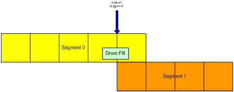
Figure 6: End-of-segment Marker
The application may use controllers in this
range for its own purposes. When a controller in this range is encountered, the
event is entered into an event queue that can be queried by the application.
Some possible uses include synchronizing video events with audio and marking a
point in a